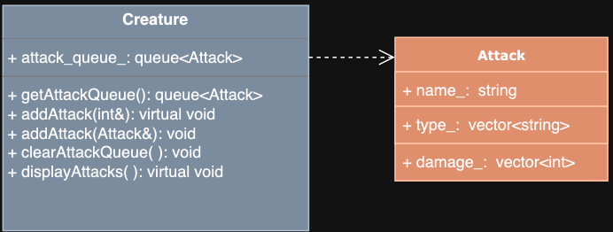
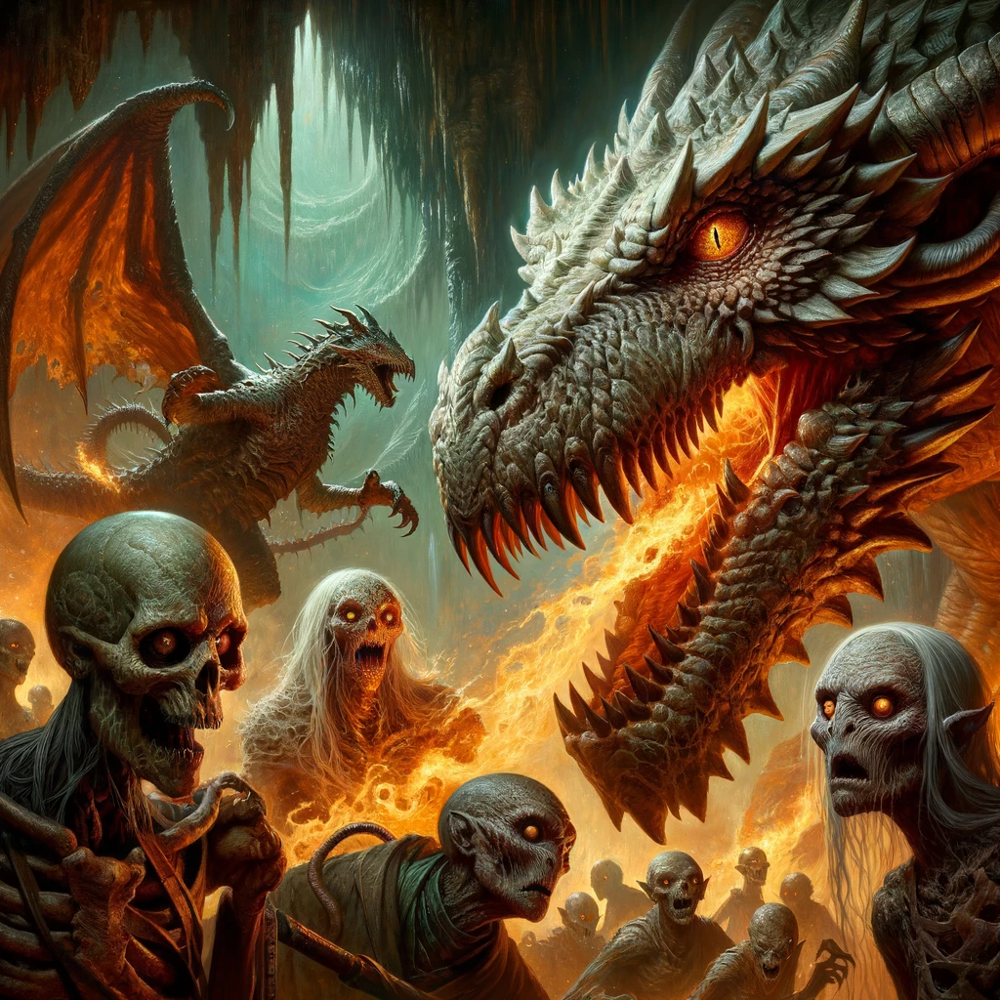
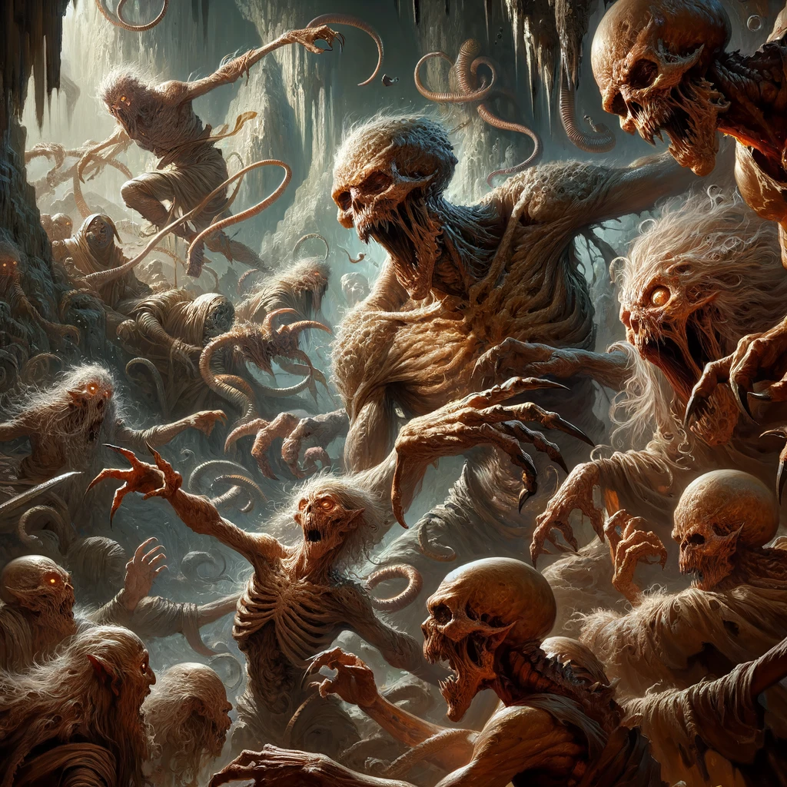
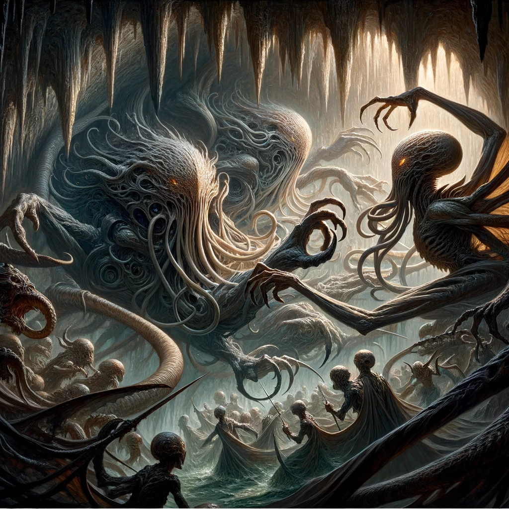

CSCI 235 Spring 2024 Term Project
Algorithmic Adventures II: Exponential Creature Odyssey
Project 6 - Creature Training!
The mysterious wizard has updated the terms for the job – they would like you to sort out the creatures of the highest level, and equip them with a queue of attacks. How this is necessary for a Creature zoo, we're not sure... but it won't be a good adventure without some action! In this project you will implement the necessary functionality that will allow us to identify our highest ranking Creatures in the Cavern, and prepare them for battle!
The link to accept the GitHub Classroom assignment can be found on Blackboard
This project consists of three tasks:
Modify the
Creatureclass so that each character will maintain a queue of Attacks. Attacks will be defined as a struct within the Creature interface (Creature.hpp) but outside the Creature class definition.Modify the Creature subclasses
Dragon,Ghoul,Mindflayerto maintain adding an Attack to their queue of attacks, and displaying their Attack options. Attacks are different for each type of Creature.Modify the
Cavernclass to maintain stacks of the highest level creatures of each category, and set Attacks for our selected Creatures.
Some additional resources
The STL
You must always include all headers, even if not required by your local environment.
Implementation
This project may take a while to implement, start right away!!!
Get Task 1 and 2 out of the way quickly as you may need more testing and debugging time for Task 3.
Work through the tasks sequentially (implement and test). Only move on to a task when you are positive that the previous one has been completed correctly. Remember that the names of classes and methods must exactly match those in this specification (FUNCTION NAMES, PARAMETER TYPES, RETURNS, PRE AND POST CONDITIONS MUST MATCH EXACTLY).
Remember, you must thoroughly document your code!!!

Task 1: Modify the Creature class
Data Types
The following type must be defined in Creature.hpp but outside the class definitions
struct Attack{std::string name_;std::vector<std::string> type_;std::vector<int> damage_;};
Each type of creature will have their own attacks. The type and damage of each attack will be based on the Creature's category. Furthermore, each attack may consist of multiple type of attacks with corresponding damage. For example, a MYSTICAL dragon with FIRE element may have a BITE attack that consists of a PHYSICAL attack with damage 4 and a FIRE attack with damage 1. Such attack would be as follows:
xxxxxxxxxxname_ = "BITE"type_ = ["PHYSICAL", "FIRE"]damage_ = [4,1]
The
Creatureclass must additionally define the following data member (in addition to those from previous projects)xxxxxxxxxx- An attack queue to store the creature's attacks NOTE: This diagram only visualizes the Creature class additions from Task 1. All data members and member functions implemented in previous projects are still there and should be left untouched as distributed with the starter code.
The
Creatureclass must additionally define the following member functions (in addition to those from previous projects)
Additional Methods
x/*** @return a copy of the attackQueue*/getAttackQueue()/*** @param: A const reference to int indicating the attack to be added to the queue.* Pure virtual function to be implemented by the derived classes*/addAttack/*** @param: A const reference to attack to be added to the queue.* @post: The attack is added to the queue*/addAttack/*** @post: the attackQueue is emptied*/clearAttackQueue/*** @post: Displays the options for the attacks* Pure virtual function to be implemented by the derived classes*/displayAttacks() const
Task 2: Modify the Dragon, Ghoul, and Mindflayer classes
The
Dragonclass must additionally define the following member functions. All data members and member functions implemented in previous projects are still there and should be left untouched as distributed with the starter code.
Additional Methods
xxxxxxxxxx/*** @param: A const reference to int corresponding to the attack to be added to the attack queue.* @post: Adds an attack to the attack queue based on the int parameter.* Here are the attacks for the Dragon:* 1: Attack name: BITE* if ALIEN: 4 PHYSICAL* if MYSTICAL: 2 PHYSICAL, and additional damage of 1 [FIRE/WATER/EARTH/AIR] if the Dragon has an elemental affinity of FIRE, WATER, EARTH, or AIR)* if UNDEAD: 2 PHYSICAL, 1 POISON* if UNKNOWN: 2 PHYSICAL* 2: Attack name: STOMP* if ALIEN: 2 PHYSICAL* if MYSTICAL: 1 PHYSICAL, and additional damage of 1 [FIRE/WATER/EARTH/AIR] if the Dragon has an elemental affinity of FIRE, WATER, EARTH, or AIR)* if UNDEAD: 1 PHYSICAL, 1 POISON* if UNKNOWN: 1 PHYSICAL* 3: Attack name: [ELEMENTAL BREATH/BAD BREATH], where the name is ELEMENTAL BREATH if the Dragon has an elemental affinity, otherwise it is BAD BREATH* if ALIEN: 6 [POISON/FIRE/WATER/EARTH/AIR], where the damage type is the Dragon's elemental affinity if it has one, otherwise it is POISON* if MYSTICAL: 3 [POISON/FIRE/WATER/EARTH/AIR], where the damage type is the Dragon's elemental affinity if it has one, otherwise it is POISON* if UNDEAD: 3 [POISON/FIRE/WATER/EARTH/AIR], 1 POISON. The damage types and amount are added to the vector as two separate entries, even if both entries are POISON type.* if UNKNOWN: 3 [POISON/FIRE/WATER/EARTH/AIR] where the damage type is the Dragon's elemental affinity if it has one, otherwise it is POISON*/addAttack/*** @post: Displays available attacks and promps the user to enter 2 numbers in the range [1,3]* Print in the following form:* [DRAGON] Choose an attack (1-3):\n1: BITE\t\t2: STOMP\t\t3: ELEMENTAL BREATH\n*/displayAttacks
The
Ghoulclass must additionally define the following member functions. All data members and member functions implemented in previous projects are still there and should be left untouched as distributed with the starter code.
Additional Methods
xxxxxxxxxx/*** @param: A const reference to int corresponding to the attack to be added to the attack queue.* @post: Adds an attack to the attack queue based on the int parameter.* Here are the attacks for the Ghoul:** 1: Attack name: BITE* if ALIEN: 4 PHYSICAL* if MYSTICAL:* if FLESHGORGER: 2 PHYSICAL* if SHADOWSTALKER: 2 PHYSICAL, 1 VOID* if PLAGUEWEAVER: 2 PHYSICAL, 1 POISON* if NONE: 2 PHYSICAL* if UNDEAD: 2 PHYSICAL, 1 POISON* if UNKNOWN: 2 PHYSICAL** 2:* if FLESHGORGER/NONE:* Attack name: CLAW* 2 PHYSICAL* if SHADOWSTALKER:* Attack name: SLASH* 2 PHYSICAL, 1 VOID* if PLAGUEWEAVER:* Attack name: INFECT* 2 PHYSICAL, 1 POISON** 3:* if FLESHGORGER/NONE:* Attack name: FLY SWARM* 3 PHYSICAL* if SHADOWSTALKER:* Attack name: SHROUD OF DARKNESS* 2 PHYSICAL, 1 VOID* if PLAGUEWEAVER:* Attack name: PLAGUE CLOUD* 2 PHYSICAL, 1 POISON**/addAttack/**@post : displays the attacks of the Ghoul in the form:[GHOUL] Choose an attack (1-3):\n1: BITE\t\t2: CLAW\t\t3: CLOUD OF DOOM\n*/displayAttacks
The
Mindflayerclass must additionally define the following member functions. All data members and member functions implemented in previous projects are still there and should be left untouched as distributed with the starter code.
Additional Methods
xxxxxxxxxx/*** @param: A const reference to int corresponding to the attack to be added to the attack queue.* @post: Adds an attack to the attack queue based on the int parameter.* Here are the attacks for the Mindflayer:** 1: PSIONIC BOLT/TENTACLE SLAP* If the Mindflayer has a PSIONIC projectile:* Attack name: PSIONIC BOLT* If the Mindflayer has a PSIONIC affinity:* Damage: 3 PSIONIC* Else:* Damage: 2 PSIONIC* If the Mindflayer does not have a PSIONIC projectile:* Attack name: TENTACLE SLAP* Damage: 1 PHYSICAL, 1 EMOTIONAL** 2: TELEPATHIC BOLT/TENTACLE SLAP* If the Mindflayer has a TELEPATHIC projectile:* Attack name: TELEPATHIC BOLT* If the Mindflayer has a TELEPATHIC affinity:* Damage: 3 TELEPATHIC* Else:* Damage: 2 TELEPATHIC* If the Mindflayer does not have a TELEPATHIC projectile:* Attack name: TENTACLE SLAP* Damage: 1 PHYSICAL, 1 EMOTIONAL** 3: ILLUSIONARY BOLT/TENTACLE SLAP* If the Mindflayer has an ILLUSIONARY projectile:* Attack name: ILLUSIONARY BOLT* If the Mindflayer has an ILLUSIONARY affinity:* Damage: 3 ILLUSIONARY* Else:* Damage: 2 ILLUSIONARY* If the Mindflayer does not have an ILLUSIONARY projectile:* Attack name: TENTACLE SLAP* Damage: 1 PHYSICAL, 1 EMOTIONAL**/addAttack/**@post : displays the attacks of the Mindflayer in the form:[MINDFLAYER] Choose an attack (1-3):\n1: PSIONIC BOLT\t\t2: TELEPATHIC BOLT\t\t3: ILLUSIONARY BOLT\n*/displayAttacks()
Task 3: Modify the Cavern class

Data Types
The Cavern class must additionally define the following data members. All data members and member functions implemented in previous projects are still there and should be left untouched as distributed with the starter code.
xxxxxxxxxx- A stack of pointers to the highest level ALIEN Creatures in the Cavern- A stack of pointers to the highest level UNDEAD Creatures in the Cavern- A stack of pointers to the highest level MYSTICAL Creatures in the Cavern- A stack of pointers to the highest level UNKNOWN Creatures in the Cavern
NOTE: This diagram only visualizes the Cavern class additions from Task 3. All data members and member functions implemented in previous projects are still there and should be left untouched as distributed with the starter code.
The
Cavernclass must additionally define the following member functions (in addition to those from previous projects)
Additional Methods
xxxxxxxxxx/*** @post: Stores the ALIEN Creatures of highest level in the cavern's mystical stack, in the order in which they appear in the Cavern (i.e., starting from index 0 in items_, thus, if the highest level is 5 and there are 3 ALIEN creatures with level 5, the one with lowest index in items_ is at the bottom of the stack and the one with highest index in item_ is at the top of the stack, with a total of 3 ALIEN Creatures on the stack)* : Empty the stack before beginning.*/initializeAlienStack/*** @post: Stores the UNDEAD Creatures of highest level in the cavern's mystical stack, in the order in which they appear in the Cavern (i.e., starting from index 0 in items_, thus, if the highest level is 5 and there are 3 UNDEAD creatures with level 5, the one with lowest index in items_ is at the bottom of the stack and the one with highest index in item_ is at the top of the stack, with a total of 3 UNDEAD Creatures on the stack): Empty the stack before beginning.*/initializeUndeadStack/*** @post: Stores the MYSTICAL Creatures of highest level in the cavern's mystical stack, in the order in which they appear in the Cavern (i.e., starting from index 0 in items_, thus, if the highest level is 5 and there are 3 MYSTICAL creatures with level 5, the one with lowest index in items_ is at the bottom of the stack and the one with highest index in item_ is at the top of the stack, with a total of 3 MYSTICAL Creatures on the stack)* : Empty the stack before beginning.*/initializeMysticalStack/*** @post: Stores the UNKNOWN Creatures of highest level in the cavern's mystical stack, in the order in which they appear in the Cavern (i.e., starting from index 0 in items_, thus, if the highest level is 5 and there are 3 UNKNOWN creatures with level 5, the one with lowest index in items_ is at the bottom of the stack and the one with highest index in item_ is at the top of the stack, with a total of 3 UNKNOWN Creatures on the stack)* : Empty the stack before beginning.*/initializeUnknownStack/*** @return: A copy of the stack of highest level Aliens in the cavern*/getAlienStack/*** @return: A copy of the stack of highest level Undeads in the cavern*/getUndeadStack/*** @return: A copy of the stack of highest level Mysticals in the cavern*/getMysticalStack/*** @return: A copy of the stack of highest level Unknowns in the cavern*/getUnknownStack/*** @post: clears the stack of highest level Aliens in the cavern*/clearAlienStack/*** @post: clears the stack of highest level Undeads in the cavern*/clearUndeadStack/*** @post: clears the stack of highest level Mysticals in the cavern*/clearMysticalStack/*** @post: clears the stack of highest level Unknowns in the cavern*/clearUnknownStack/*** @param: A stack of creature pointers* @pre: All the creature on the input stack are of same category and same (highest) level* @post: For each creature in the stack, rebuild the Cavern's appropriate stack. (For example, if the creatures given are of category ALIEN, this function should build the Cavern's Alien stack.)* Clear the Cavern's stack of the given category before adding the creatures to the stack.* Before adding each creature to the Cavern's stack, prompt the user to select 2 attacks for the creature.* Preserve the order of the creatures in the stack given. (E.g. The creature at the top of the given stack should also become the creature at the top of the Cavern's stack)* If the input is invalid (valid inputs will be 1,2 or 3 only), keep prompting for a non-negative number that is within range, by printing "INVALID INPUT. TRY AGAIN.\n" and prompt for input again.* When a valid action is read, it is passed to the creature's addAttack function to add the corresponding attack to the creature's attack queue.* Prompting for attacks should be done in the following form (hint: use the creature's displayAttacks function):* SELECT 2 ATTACKS FOR [CREATURE NAME] (1-3):* 1: [ATTACK 1 NAME]\t\t2: [ATTACK 2 NAME]\t\t3: [ATTACK 3 NAME]*/setAttacks
Debugging Help
You have been provided with creatures.csv along with your starter code, which you can use with the provided Cavern parameterized constructor to test/debug.
An example output of one turn of running
setAttacks()
xxxxxxxxxxSELECT 2 ATTACKS FOR JHARYX[DRAGON] Choose an attack (1-3):1: BITE 2: STOMP 3: ELEMENTAL BREATH1[DRAGON] Choose an attack (1-3):1: BITE 2: STOMP 3: ELEMENTAL BREATH1SELECT 2 ATTACKS FOR ZYRAJA[GHOUL] Choose an attack (1-3):1: BITE 2: CLAW 3: CLOUD OF DOOM1[GHOUL] Choose an attack (1-3):1: BITE 2: CLAW 3: CLOUD OF DOOM1
An example output of one call to
setAttacks()with invalid input
xxxxxxxxxxSELECT 2 ATTACKS FOR VYLTHOR[DRAGON] Choose an attack (1-3):1: BITE 2: STOMP 3: ELEMENTAL BREATH-1INVALID INPUT. TRY AGAIN.4INVALID INPUT. TRY AGAIN.5INVALID INPUT. TRY AGAIN.1[DRAGON] Choose an attack (1-3):1: BITE 2: STOMP 3: ELEMENTAL BREATH2SELECT 2 ATTACKS FOR LYTHARA[GHOUL] Choose an attack (1-3):1: BITE 2: CLAW 3: CLOUD OF DOOM3[GHOUL] Choose an attack (1-3):1: BITE 2: CLAW 3: CLOUD OF DOOM4INVALID INPUT. TRY AGAIN.2
Testing
Although you will no longer submit your test file, you must continue to thoroughly and methodically test your code.
Start by stubbing all expected functions. Have all function declarations in the .hpp and stubs for all functions in the .cpp. When submitted as such, your program will compile, although you will fail all tests, since you have not implemented any functions yet. If your program compiles, you will have at least established that all functions have correct name, parameters and return-type.
What is a stub? A stub is a dummy implementation that always returns a single value for testing (or has an empty body, if void). Don’t forget to go back and implement the stub!!! If you put the word STUB in a comment, some editors will make it more visible.
Now you can start implementing and testing your project, ONE FUNCTION AT A TIME!
Write a
main()function to test your implementation. Choose the order in which you implement your methods so that you can test incrementally: i.e. implement constructors then accessor functions, then mutator functions.For each class, test each function you implement with all edge cases before you move on to implement the next function. This includes all constructors.
Make sure you include all packages and libraries you use.
How to compile with your Makefile:
In terminal, in the same directory as your Makefile and your source files, use the following command
xxxxxxxxxxmake rebuild
This assumes you did not rename the Makefile and that it is the only one in the current directory.
Grading Rubric
Correctness 80% (distributed across unit testing of your submission)
Documentation 15%
Style and Design 5% (proper naming, modularity, and organization)
Important: You must start working on the projects as soon as they are assigned to detect any problems with submitting your code and to address them with us well before the deadline so that we have time to get back to you before the deadline.
There will be no negotiation about project grades after the submission deadline.
Submission:
We will grade the following :
Creature.hpp
Creature.cpp
Cavern.hpp
Cavern.cpp
Dragon.hpp
Dragon.cpp
Ghoul.hpp
Ghoul.cpp
Mindflayer.hpp
Mindflayer.cpp
Although Gradescope allows multiple submissions, it is not a platform for testing and/or debugging and it should not be used for that. You MUST test and debug your program locally. To help you not rely too much on Gradescope for testing, we will only allow 5 submissions per day. Before submitting to Gradescope you MUST ensure that your program compiles using the provided Makefile and runs correctly on the Linux machines in the labs at Hunter (see detailed instructions on how to upload, compile and run your files in the “Programming Guidelines” document). That is your baseline, if it runs correctly there it will run correctly on Gradescope, and if it does not, you will have the necessary feedback (compiler error messages, debugger or program output) to guide you in debugging, which you don’t have through Gradescope. “But it ran on my machine!” is not a valid argument for a submission that does not compile. Once you have done all the above you submit it to Gradescope.
Due date:
This project is due April 18
No late submissions will be accepted.**
Important
You must start working on the projects as soon as they are assigned to detect any problems and to address them with us well before the deadline so that we have time to get back to you before the deadline. There will be no extensions and no negotiation about project grades after the submission deadline.
Help
Help is available via drop-in tutoring in Lab 1001B (see website for schedule). You will be able to get help if you start early and go to the lab early. We only have 3 UTAs in the lab, the days leading up to the due date will be crowded and you will not be able to get much help then.
Authors: Georgina Woo, Tiziana Ligorio